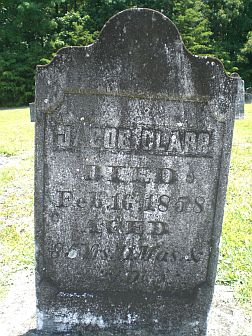

|
|
| 
Jacob C. CLAPP (1772-1858) |
Jacob C. CLAPP
-- John W. Boring, JBoring Database Jacob married Rosina "Rosa" SUMMERS, daughter of Captain Peter SUMMERS and Rosa Ann CLAPP, on 12 Feb 1807 in Guilford County, North Carolina. (Rosina "Rosa" SUMMERS was born on 26 Nov 1789 in Guilford County, North Carolina, died on 27 Dec 1878 in Guilford County, North Carolina and was buried in Friedens Lutheran Church Cemetery, Gibsonville, Guilford County, NC.) |
 Another name for Jacob was Jacob C. "Roper Jake" CLAPP.
Another name for Jacob was Jacob C. "Roper Jake" CLAPP.